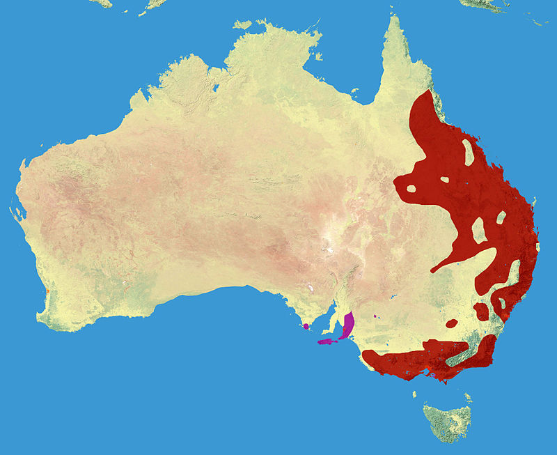
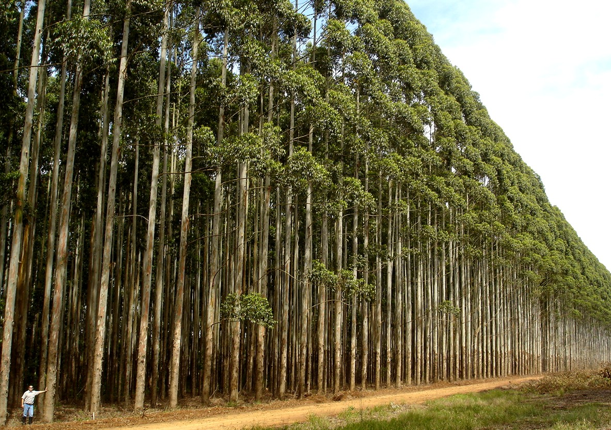
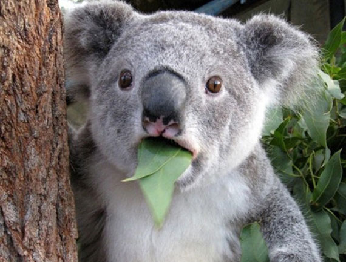

| El koala (Phascolarctos cinereus) es una especie de marsupial diprotodonto de la familia Phascolarctidae, endémico de Australia. Es el único representante existente de la familia Phascolarctidae y sus parientes vivos más cercanos son los wombats. Es fácilmente reconocible por su cuerpo robusto sin cola, cabeza grande con orejas redondas y peludas y nariz grande en forma de cuchara. Mide entre 60 y 85 cm y pesan de 4 a 15 kg. El color de su pelaje va del gris plata al marrón chocolate. Las poblaciones septentrionales suelen ser de menor tamaño y de un color más claro que las del sur, por lo que se cree que puedan ser una subespecie separada, aunque esta posibilidad está en discusión. |
Vive en las zonas costeras de las regiones este y sur australianas, en los estados de Queensland, Nueva Gales del Sur, Victoria y Australia Meridional. |

El lugar donde viven los habitan los koalas son los árboles y es uno de los animales más populares originarios de Australia es decir que solo su habitat natural es haya. Los koalas viven en los bosques de eucalipto también conocidos como árboles de goma, allí pasan la mayoría de su vida. |


Los koalas viven en colonias de múltiples individuos, cada uno de ellos de los que componen su territorio se ubican en árboles concretos que se ha marcan con rasguños y la fragancia de la orina de ellos mismos.
| VOLVER AL INICIO |